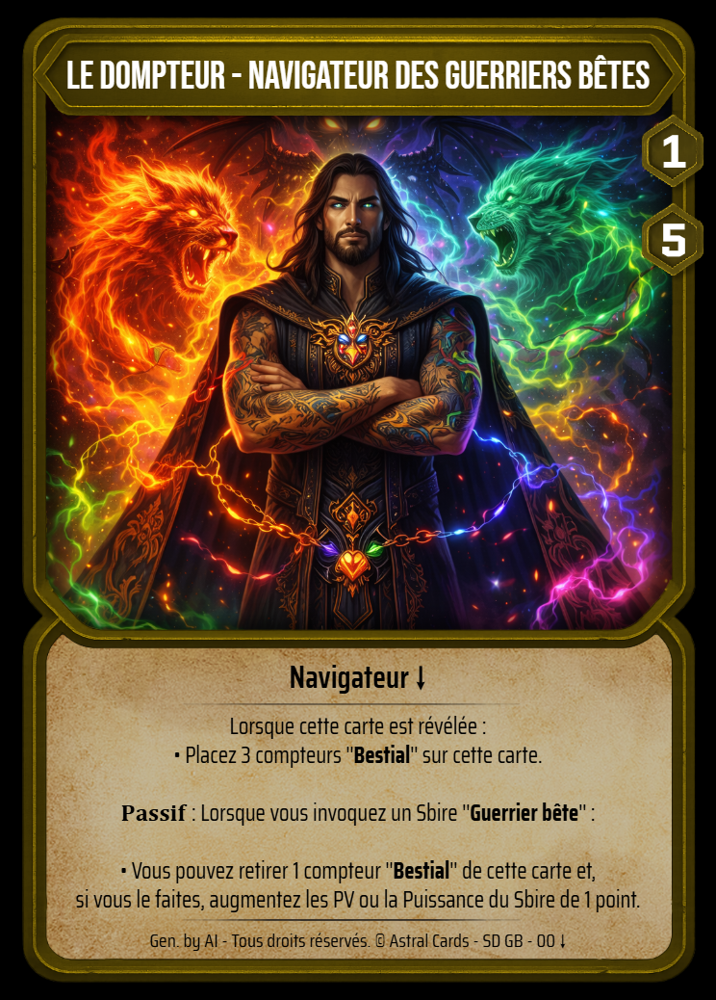
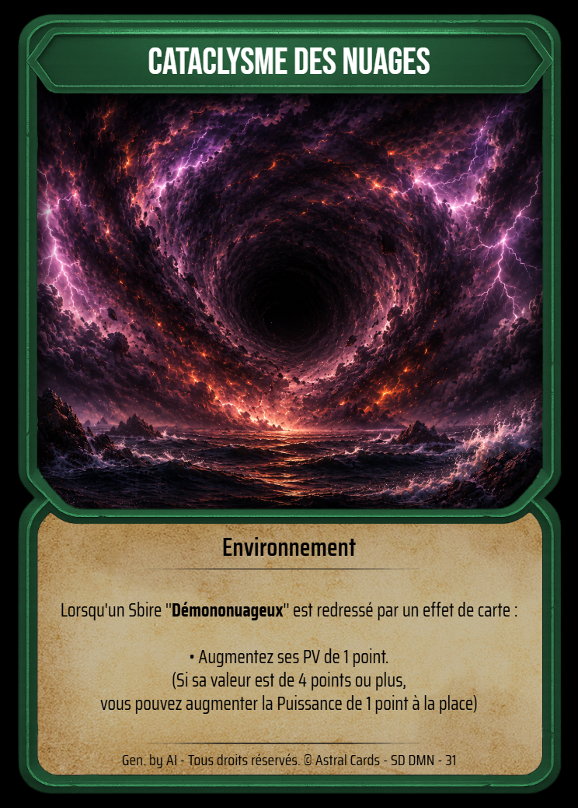
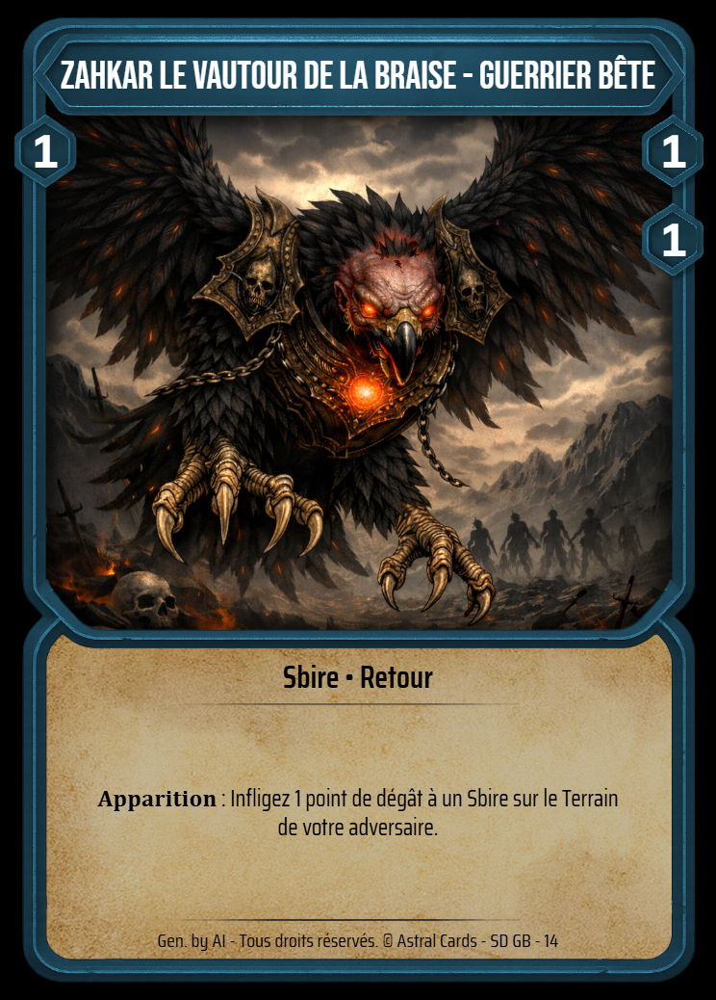
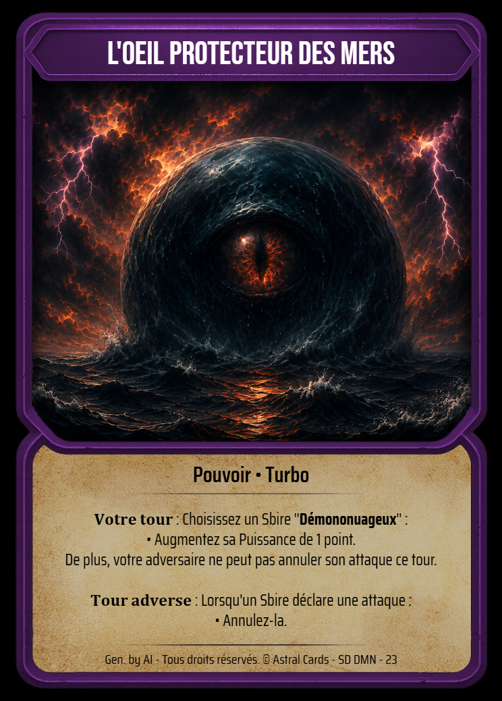
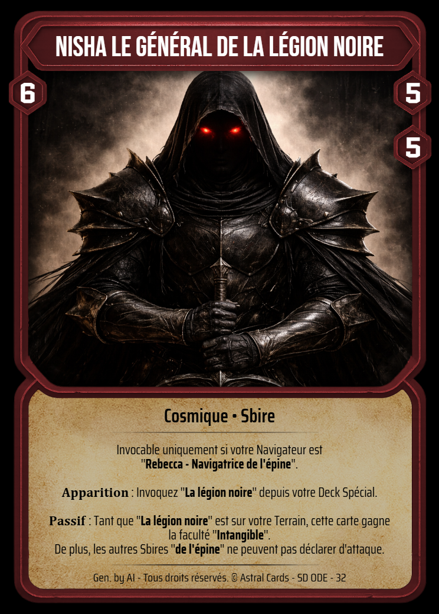
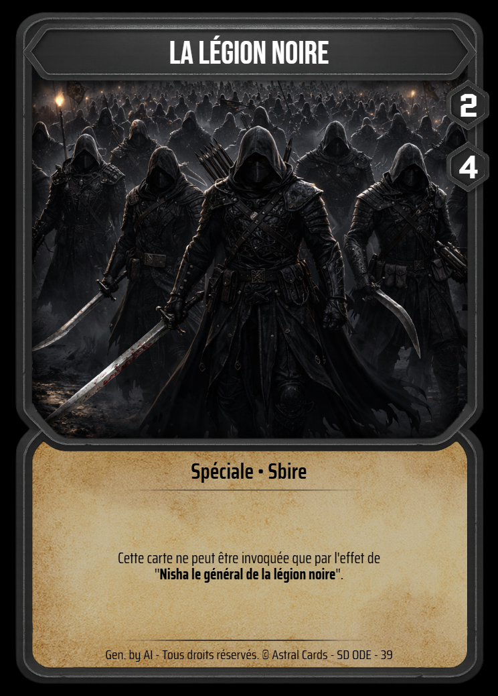

Préparation de la partie
1) Structure de deck nécessaire
Composition obligatoire
- 1 Carte Navigateur
- 1 Carte Environnement
- 15 Cartes Sbires
- 15 Cartes Pouvoirs
- 4 Cartes Cosmiques
Complément / Recommandé
- 1 à 4 Cartes Spéciales
- Maximum total du deck : 40 cartes
- Aucune carte ne peut être jouée en doublon dans le deck, sauf si elle possède la faculté Multiples (x) voir glossaire.
2) Le tapis de jeu
Chaque joueur prépare son espace de jeu avec les zones suivantes. La grille ci-dessous sert de représentation textuelle du tapis.

3) Objets complémentaires
Les différents types de cartes
Cette section présente directement chaque type de carte avec son visuel à gauche et son explication à droite. Cliquez sur une carte pour l’agrandir.

Navigateur
Élément central du deck. Chaque Navigateur possède sa propre mécanique et définit une partie de l’identité stratégique du joueur.
Lorsque le joueur passe au tour 7, il devient ASTRAL et le Navigateur se retourne.. Dévoilant sa forme ASTRAL !

Environnement
L’Environnement est une carte centrale dans la stratégie du Deck !
Elle se dévoile au tour 3 en même temps que le Navigateur !

Sbire
Les Sbires sont vos unités de terrain. Ils servent à combattre, défendre, détruire les cartes adverses et mettre la pression sur le Navigateur ennemi.
Leurs effets peuvent se déclencher de différentes manières : Apparition, Destruction, Conquérant, Retour et plus encore.

Pouvoir
Les cartes Pouvoir permettent de produire une ou plusieurs actions selon leur texte.
Elles peuvent soutenir vos cartes, perturber l’adversaire, modifier le terrain ou créer des effets particuliers comme Turbo, Infinity ou Black-Hole.

Cosmique
Les cartes Cosmiques peuvent être de type Sbire ou Pouvoir.
Ce sont des outils puissants pour votre deck, mais elles demandent certaines conditions avant de pouvoir être jouées.

Spéciale
Les cartes Spéciales sont des cartes particulières invocables / activables uniquement par des effets de cartes.
Déroulement d’une partie
1) Les différentes conditions de victoire
- PV du Navigateur adverse à 0
- L’adversaire n’a plus de cartes dans son deck et ne peut plus jouer d’action principale durant son tour
- Vous atteignez 12 étoiles
- Un effet de carte vous donne directement la victoire
2) Règles globales
Chaque joueur commence avec 0 étoile et 0 Energy. Au début de son tour, l’Energy maximum du joueur augmente de 1, jusqu’à un maximum de 7.
Lors du tour du joueur, il pioche 2 cartes. La Main d'un joueur à la fin de son tour ne peut pas excéder 7 cartes. Dans le cas contraire, il envoie le surplus dans son Deck puis le mélange.
Détruire un Sbire adverse augmente votre nombre maximum d’étoiles de 1. Incliner l’un de vos Sbires augmente également votre nombre maximum d’étoiles de 1, à condition que le Navigateur adverse ne soit pas encore révélé.
12 étant le nombre d'étoiles maximum, cela fait gagner la partie instantanément.
• Lorsque vous avez 3 points d'Energy, tour 3 du joueur, vous révélez votre Navigateur. Ce faisant, vous déplacez et dévoilez votre carte Environnement dans sa Zone dédiée.
• Lorsque vous avez 5 points d'Energy, tour 5 du joueur : État Cosmique ! Vous ajoutez votre Deck Cosmique dans votre Deck principal.
• Lorsque vous avez 7 points d'Energy (tour 7 du joueur), entrez en État Astral ! Vous retournez votre Navigateur, dévoilant sa véritable puissance. Vous pouvez désormais effectuer une troisième action principale à chacun de vos tours et vous débloquez les effets Astral de vos cartes. À partir de cet instant, votre Navigateur est également autorisé à attaquer le Navigateur adverse, en respectant les mêmes conditions d'attaque qu'un Sbire.
• À partir du tour 9, la SuperNova entre en scène. Lorsque vous terminez votre tour, votre Navigateur perd 1 PV.
Lors du changement d'état, révélation du Navigateur, État Cosmique / Astral, cela s'effectue toujours lorsque vous avez redressé vos cartes. Voir le déroulement d'un tour plus bas.
Chaque joueur peut effectuer jusqu’à 2 actions principales à n’importe quel moment de son tour, puis une 3e action principale une fois les 7 d’Energy atteints. Il n’est pas possible d’effectuer plus de 2 fois le même type d’action principale durant le même tour. Sbire ≠ Pouvoir.
Un joueur peut attaquer à n’importe quel moment de son tour avec un Sbire prêt au combat, donc en position verticale.
Quand un Sbire avec un coût d'Energy est invoqué en payant le coût, on dit alors qu'il est invoqué normalement. Cela compte dans votre action principale du tour. En revanche, un Sbire invoqué par un effet de carte est invoqué spécialement. L'action d'invoquer ne coûte pas d'action principale ni de payer le coût d'Energy, sauf si l'effet mentionne de payer le coût.
Un Sbire sans coût d’Energy ne peut être invoqué que par un effet. Il ne peut donc pas être invoqué gratuitement depuis la main. De plus, un Sbire n'a que deux positions : Vertical, Redressé, ou Horizontal, Incliné.
Les effets de cartes priment toujours sur les règles globales. Exemple : si une règle dit de piocher 2 cartes au début du tour, mais qu’un effet indique que vous ne pouvez en piocher qu’une, alors vous n’en piochez qu’une.
Durant le tour de votre adversaire vous ne pouvez activer qu'un seul effet de carte avec la Faculté Turbo ou Black-Hole.
Facultés et effets : Les cartes possèdent un encadré de texte décrivant leurs effets. Ces effets représentent les actions ou capacités d’une carte et peuvent être activés, déclenchés ou annulés. Certaines cartes possèdent également des facultés, indiquées à côté de leur type. Une faculté est une caractéristique propre à la carte, indépendante de son texte d’effet. Elle représente un trait permanent ou une propriété identifiable, par exemple Tank, Retour, etc. Les facultés ne sont pas affectées par les effets qui annulent ou modifient les effets de carte, sauf mention contraire. De même, certaines interactions peuvent cibler ou référencer spécifiquement des facultés, sans interagir avec les effets. Cette distinction permet de différencier les propriétés intrinsèques d’une carte de ses capacités.
La différence entre “Ce tour”, “Pendant votre tour” et “Durant votre tour” est différente de “tour global”, ce dernier signifiant que l'action se prolonge pendant le tour des deux joueurs. Voir l'effet sur la carte.
Par défaut, un effet Actif d'un Sbire n'est activable qu'une seule fois par tour, sauf si l'effet mentionne le contraire. De plus, si Actif est précédé de Turbo, alors l'effet Actif peut être utilisé durant le tour de votre adversaire, sinon il n'est activable que durant votre tour de jeu. Actif Turbo est différent d'une carte Pouvoir durant le tour adverse, vous pouvez faire l'un et l'autre mais une seule fois.
Lorsqu'un effet vous demande d'ajouter une carte à votre Deck ou de prendre une carte depuis votre Deck (autrement que par un effet de Pioche), mélangez votre Deck une fois la résolution complète de cet effet terminée.
✦ : Étoile — Représente une ressource. Certaines cartes possèdent des effets nécessitant de payer un coût en ✦ (indiqué sur la carte) pour pouvoir les activer.
3) Préparation du tapis de jeu
Les joueurs placent leurs cartes Navigateurs bas ↓ dans l'emplacement dédié puis posent leurs cartes Environnements par-dessus face verso pour le cacher. Ensuite chaque joueur place face verso sur les zones prévues : leurs cartes Cosmiques et Spéciales.
Ensuite, chaque joueur lance 1D6. Le joueur obtenant le plus grand résultat décide s’il souhaite commencer ou non.
4) Structure du premier tour
Chaque joueur pioche 5 cartes depuis son deck.
Chaque joueur peut Reforger sa main 1 fois.
Le premier joueur augmente son Energy max de 1, ne pioche aucune carte et poursuit son tour normalement.
Lors de son premier tour, le second joueur augmente son Energy de 1, pioche 1 carte puis poursuit son tour normalement.
5) Structure d’un tour, à partir du tour 2
Votre réserve d’Energy maximum progresse de 1, jusqu’à un maximul de 7.
Sauf si un effet modifie cette règle.
Redressez vos Sbires et votre Navigateur, sauf les Sbires n'ayant pas de statistique de Puissance eux, restent inclinés.
Vérifiez la progression et vos états éventuels : Navigateur / Cosmique / Astral / SuperNova par rapport au tour en cours.
6) Combat et suite d’effets
Règles de combat
Lorsqu’un Sbire est prêt au combat, en position verticale, il peut attaquer un Sbire adverse ou le Navigateur adverse. Lorsqu’il attaque, il s’incline. Il doit cependant avoir au minimum 1 PP. S'il ne possède pas statistique de Puissance, le Sbire ne peut pas se redresser et reste donc incliné.
Contre un Navigateur, les dégâts sont toujours de 1, à condition que le Sbire possède au moins 1 point de Puissance, PP. Le joueur doit d'abord détruire tous les Sbires sur le Terrain adverse avant de pouvoir attaquer le Navigateur adverse.
Contre un autre Sbire, on soustrait la Puissance de la carte attaquante aux PA si applicable puis aux PV.
Exemple : un Sbire à 4 PP attaque un Sbire à 6 PV. Après l’attaque, le Sbire attaqué tombe à 2 PV.
Exemple² : un Sbire à 4 PP attaque un Sbire à 2 PA et possède 4 PV. Après l’attaque, le Sbire attaqué tombe à 2 PV.
Si les PV tombent à 0, la carte est envoyée dans la Vortex de son propriétaire, sauf si un effet précise autre chose.
Activations et limites
Un Sbire qui attaque et s’incline peut quand même activer ses effets, sauf restriction indiquée sur la carte.
Règle importante : un effet Actif d’un même Sbire ne peut être activé qu’une seule fois par tour.
Exemple : si vous contrôlez Sbire A et Sbire B, chacun peut activer son effet Actif une fois, mais pas d'avantage.
Chaîne de résolution des effets
Les effets se résolvent dans l’ordre inverse de leur activation. Si Effet A s’active, puis Effet B, puis Effet C, on résout d’abord C, puis B, puis A.
Si un effet ne dit pas qu’il annule mais qu’il détruit une carte, alors une carte déjà détruite peut tout de même voir son effet se déclencher si sa condition a été remplie.
Exemple : vous invoquez un Sbire avec un effet d’Apparition. Votre adversaire active un effet disant que lorsqu’un Sbire est invoqué, il est détruit. Le Sbire a bien touché le terrain, donc sa condition d’Apparition a été remplie. Il est détruit, mais son effet d’Apparition n’est pas annulé pour autant.
Mort subite
La mort subite commence lorsqu’un joueur n’a plus de carte à piocher. Ce joueur doit alors, durant son tour, au minimum :
- invoquer un Sbire depuis sa main
- ou activer une carte Pouvoir depuis sa main
S’il ne peut faire aucune de ces deux actions, il perd la partie au moment où il devrait terminer / passer son tour.
Cela signifie qu’il peut encore effectuer un dernier tour complet : attaquer, activer des effets, tenter une remontée… mais s’il finit sans avoir invoqué ou activé une carte depuis sa main, la partie est perdue.